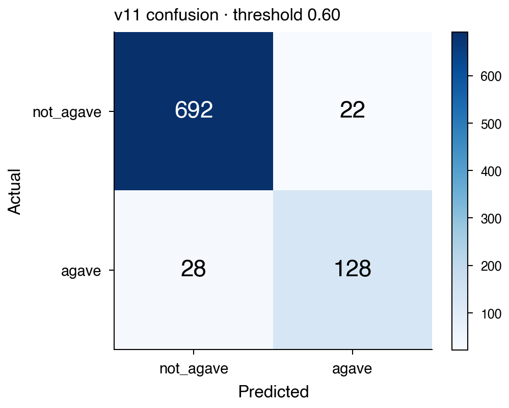
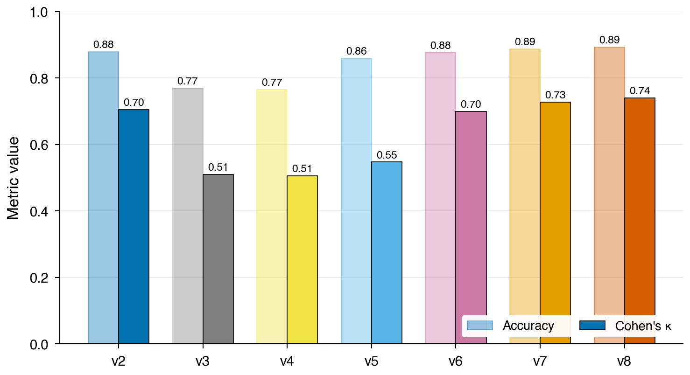

| pred. not-agave | pred. agave | |
|---|---|---|
| ref. not-agave | 692 (TN) | 22 (FP) |
| ref. agave | 28 (FN) | 128 (TP) |
| Class | precision | recall |
|---|---|---|
| agave | 0.853 | 0.821 |
| not-agave | 0.961 | 0.969 |
False positives (22/870 = 2.5 %) fall mostly in dense xeric scrub adjacent to plantation; false negatives (28/870 = 3.2 %) in young plantation (< 2 yr) with sparse canopy.

| Version | Labels | τ | accuracy | κ | recall (agave) |
|---|---|---|---|---|---|
| v8 (AlphaEarth + terrain) | 2,347 | 0.75 | 0.893 | 0.741 | 0.825 |
| v9 (larger panel) | 4,849 | 0.75 | 0.9333 | 0.7757 | 0.827 |
| v11 (data-driven τ, 3-district AOI) | 4,849 | 0.60 | 0.9425 | 0.8018 | 0.821 |

Classifier: scikit-learn HistGradientBoostingClassifier (class_weight='balanced', max_iter=300, learning_rate=0.1, random_state=20251109). Predictors: AlphaEarth Foundations 64-dim annual embeddings + 5-band Copernicus-DEM terrain = 69 features. Decision threshold: τ̂ = 0.60 (global F1 optimum on the held-out panel).
Reported area uses raw map-pixel counts with a spatial block-bootstrap CI (2025: ±1,694 ha); it is not a design-based (Olofsson) estimate, and the reference panel is a purpose-built photo-interpretation set, not a probability sample. See docs/LIMITATIONS.md and docs/PAPER_SCIENCE_CHECK.md in the repository.